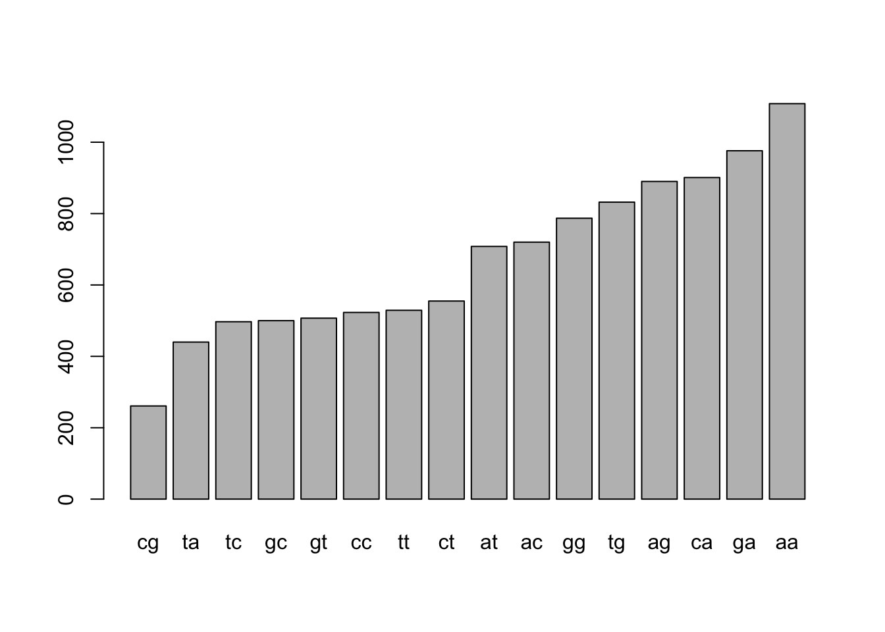
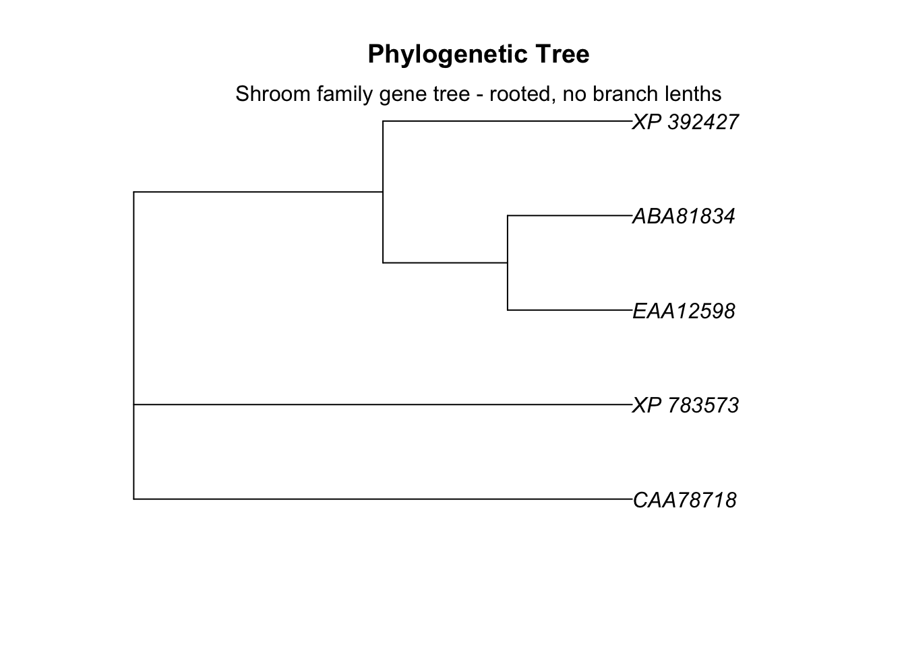

Chapter 18 “Worked example: Building a phylogeny in R”
18.1 Introduction
Phylogenies play an important role in computational biology and bioinformatics. Phylogenetics itself is an obligatly computational field that only began rapid growth when computational power allowed the many algorithms it relies on to be done rapidly. Phylogeneies of species, genes and proteins are used to address many biological issues, including
- Patterns of protein evolution
- Origin and evolution of phenotypic traits
- Origin and progression of epidemics
- Origin of evolution of diseases (e.g., zooenoses)
- Prediction of protein function from its sequence
- … and many more
The actual building of a phylogeny is a computationally intensive task; moreover, there are many bioinformatics and computational tasks the precede the construction of a phylogeny:
- genome sequencing and assembly
- computational gene prediction and annotation
- database searching and results screening
- pairwise sequence alignment
- data organization and cleaning
- multiple sequence alignment
- evaluation and validation of alignment accuracy
Once all of these steps have been carried out, the building of a phylogeny involves
- picking a model of sequence evolution or other description of evolution
- picking a statistical approach to tree construction
- evaluating uncertainty in the final tree
In this chapter we will work through many of these steps. In most cases we will pick the easiest or fastest option; in later chapters we will unpack the various options. This chapter is written as an interactive R session. You can follow along by opening the .Rmd file of the chapter or typing the appropriate commands into your own script. I assume that all the necessary packages have been installed and they only need to be loaded into R using the library() command.
This lesson walks you through and entire workflow for a bioinformatics project, including
- obtaining FASTA sequences
- cleaning sequences
- creating alignments
- creating a distance matrix
- building a phylogenetic tree
We’ll examine the Shroom family of genes, which produces Shroom proteins essential for tissue formation in many multicellular eukaryotes, including neural tube formation in vertebrates. We’ll examine shroom in several very different organism, including humans, mice and sea urchins. There is more than one type of shroom in vertebrates, and we’ll also look at two different Shroom genes: shroom 1 and shroom 2.
This lesson draws on skills from previous sections of the book, but is written to act as a independent summary of these activities. There is therefore review of key aspects of R and bioinformatics throughout it.
18.1.1 Vocab
18.2 Software Preliminaires
- argument
- function
- list
- named list
- vector
- named vector
- for() loop
- R console
18.2.1 R functions
- library()
- round()
- plot()
- mtext()
- nchar()
- rentrez::entrez_fetch()
- compbio4all::entrez_fetch_list()
- compbio4all::print_msa() (Coghlan 2011)
- Biostrings::AAStringSet()
- msa::msa()
- msa::msaConvert()
- msa::msaPrettyPrint()
- seqinr::dist.alignment()
- ape::nj()
A few things need to be done to get started with our R session.
18.2.2 Download necessary packages
Many R sessions begin by downloading necessary software packages to augment R’s functionality.
If you don’t have them already, you’ll need the following packages from CRAN:
apeseqinrrentrezdevtools
The CRAN packages can be loaded with install.packages().
You’ll also need these packages from Bioconductor:
msaBiostrings
For installing packages from Bioconductor, see the chapter at the beginning of this book on this process.
Finally, you’ll need these package from GitHub
compbio4allggmsa
To install packages from GitHub you can use the code devtools::install_github("brouwern/compbio4all") and devtools::install_github("YuLab-SMU/ggmsa")
This code chunk downloads most of these packages. The code has been commented out because it only needs to be run once.
# Install needed packages
## CRAN PACKAGES
# downloaded using install.packages()
# install.packages("rentrez",dependencies = TRUE)
# install.packages("devtools")
# install.packages("ape")
# install.packages("seqinr")
### BiocManager - CRAN package to download
##### Bioconductor packages
# requires BiocManager
# install.packages("BiocManager")
## BioConductor packages
### downloaded with BiocManager::install(), NOT install.packages()
# BiocManager::install("msa")
# BiocManager::install("Biostrings")
## GitHub packages
### requires devtools package and its function install_github()
# library(devtools)
# devtools::install_github("brouwern/combio4all")
# devtools::install_github("YuLab-SMU/ggmsa")18.2.3 Load packages into memory
We now need to load up all our bioinformatics and phylogenetics software into R. This is done with the library() command.
To run this code just click on the sideways green triangle all the way to the right of the code.
NOTE: You’ll likely see some red code appear on your screen. No worries, totally normal!
# github packages
library(compbio4all)
library(ggmsa)
# CRAN packages
library(rentrez)
library(seqinr)
library(ape)
# Bioconductor packages
## msa
### The msa package is having problems on some platforms
### You can skip the msa steps if necessary. The msa output
### is used to make a distance matrix and then phylogenetics trees,
### but I provide code to build the matrix by hand so
### you can proceed even if msa doesn't work for you.
library(msa)
## Biostrings
library(Biostrings)18.3 Downloading macro-molecular sequences
We’re going to explore some sequences. First we need to download them. To do this we’ll use a function, entrez_fretch(), which accesses the Entrez system of database (ncbi.nlm.nih.gov/search/). This function is from the rentrez package, which stands for “R-Entrez.”
We need to tell entrez_fetch() several things
db = ...the type of entrez database.
id = ...the accession (ID) number of the sequencerettype = ...file type what we want the function to return.
Formally, these things are called arguments by R.
We’ll use these settings:
db = "protein"to access the Entrez database of protein sequences
rettype = "fasta", which is a standard file format for nucleic acid and protein sequences
We’ll set id = ... to sequences whose accession numbers are:
- NP_065910: Human shroom 3
- AAF13269: Mouse shroom 3a
- CAA58534: Human shroom 2
- XP_783573: Sea urchin shroom
There are two highly conserved regions of shroom 3 1. ASD 1: aa 884 to aa 1062 in hShroom3 1. ASD 2: aa 1671 to aa 1955 in hShroom3
Normally we’d have to download these sequences by hand through pointing and clicking on GeneBank records on the NCBI website. In R we can do it automatically; this might take a second.
All the code needed is this:
# Human shroom 3 (H. sapiens)
hShroom3 <- rentrez::entrez_fetch(db = "protein",
id = "NP_065910",
rettype = "fasta")Note: if you aren’t connected to wifi or the server itself is having problem, then when you run this code you may get an error like this: “Quitting from lines 244-259 (23-MSA-walkthrough-shroom.Rmd) Error: HTTP failure: 500 {”error”:“error forwarding request”,“api-key”:“71.182.228.80”,“type”:“ip”, “status”:“ok”} Execution halted”
You may have to try again later to knit the code.
The output is in FASTA format. We can look at the raw output by calling up the object we created. This will run as single continuous string of characters without line breaks
hShroom3## [1] ">NP_065910.3 protein Shroom3 [Homo sapiens]\nMMRTTEDFHKPSATLNSNTATKGRYIYLEAFLEGGAPWGFTLKGGLEHGEPLIISKVEEGGKADTLSSKL\nQAGDEVVHINEVTLSSSRKEAVSLVKGSYKTLRLVVRRDVCTDPGHADTGASNFVSPEHLTSGPQHRKAA\nWSGGVKLRLKHRRSEPAGRPHSWHTTKSGEKQPDASMMQISQGMIGPPWHQSYHSSSSTSDLSNYDHAYL\nRRSPDQCSSQGSMESLEPSGAYPPCHLSPAKSTGSIDQLSHFHNKRDSAYSSFSTSSSILEYPHPGISGR\nERSGSMDNTSARGGLLEGMRQADIRYVKTVYDTRRGVSAEYEVNSSALLLQGREARASANGQGYDKWSNI\nPRGKGVPPPSWSQQCPSSLETATDNLPPKVGAPLPPARSDSYAAFRHRERPSSWSSLDQKRLCRPQANSL\nGSLKSPFIEEQLHTVLEKSPENSPPVKPKHNYTQKAQPGQPLLPTSIYPVPSLEPHFAQVPQPSVSSNGM\nLYPALAKESGYIAPQGACNKMATIDENGNQNGSGRPGFAFCQPLEHDLLSPVEKKPEATAKYVPSKVHFC\nSVPENEEDASLKRHLTPPQGNSPHSNERKSTHSNKPSSHPHSLKCPQAQAWQAGEDKRSSRLSEPWEGDF\nQEDHNANLWRRLEREGLGQSLSGNFGKTKSAFSSLQNIPESLRRHSSLELGRGTQEGYPGGRPTCAVNTK\nAEDPGRKAAPDLGSHLDRQVSYPRPEGRTGASASFNSTDPSPEEPPAPSHPHTSSLGRRGPGPGSASALQ\nGFQYGKPHCSVLEKVSKFEQREQGSQRPSVGGSGFGHNYRPHRTVSTSSTSGNDFEETKAHIRFSESAEP\nLGNGEQHFKNGELKLEEASRQPCGQQLSGGASDSGRGPQRPDARLLRSQSTFQLSSEPEREPEWRDRPGS\nPESPLLDAPFSRAYRNSIKDAQSRVLGATSFRRRDLELGAPVASRSWRPRPSSAHVGLRSPEASASASPH\nTPRERHSVTPAEGDLARPVPPAARRGARRRLTPEQKKRSYSEPEKMNEVGIVEEAEPAPLGPQRNGMRFP\nESSVADRRRLFERDGKACSTLSLSGPELKQFQQSALADYIQRKTGKRPTSAAGCSLQEPGPLRERAQSAY\nLQPGPAALEGSGLASASSLSSLREPSLQPRREATLLPATVAETQQAPRDRSSSFAGGRRLGERRRGDLLS\nGANGGTRGTQRGDETPREPSSWGARAGKSMSAEDLLERSDVLAGPVHVRSRSSPATADKRQDVLLGQDSG\nFGLVKDPCYLAGPGSRSLSCSERGQEEMLPLFHHLTPRWGGSGCKAIGDSSVPSECPGTLDHQRQASRTP\nCPRPPLAGTQGLVTDTRAAPLTPIGTPLPSAIPSGYCSQDGQTGRQPLPPYTPAMMHRSNGHTLTQPPGP\nRGCEGDGPEHGVEEGTRKRVSLPQWPPPSRAKWAHAAREDSLPEESSAPDFANLKHYQKQQSLPSLCSTS\nDPDTPLGAPSTPGRISLRISESVLRDSPPPHEDYEDEVFVRDPHPKATSSPTFEPLPPPPPPPPSQETPV\nYSMDDFPPPPPHTVCEAQLDSEDPEGPRPSFNKLSKVTIARERHMPGAAHVVGSQTLASRLQTSIKGSEA\nESTPPSFMSVHAQLAGSLGGQPAPIQTQSLSHDPVSGTQGLEKKVSPDPQKSSEDIRTEALAKEIVHQDK\nSLADILDPDSRLKTTMDLMEGLFPRDVNLLKENSVKRKAIQRTVSSSGCEGKRNEDKEAVSMLVNCPAYY\nSVSAPKAELLNKIKEMPAEVNEEEEQADVNEKKAELIGSLTHKLETLQEAKGSLLTDIKLNNALGEEVEA\nLISELCKPNEFDKYRMFIGDLDKVVNLLLSLSGRLARVENVLSGLGEDASNEERSSLYEKRKILAGQHED\nARELKENLDRRERVVLGILANYLSEEQLQDYQHFVKMKSTLLIEQRKLDDKIKLGQEQVKCLLESLPSDF\nIPKAGALALPPNLTSEPIPAGGCTFSGIFPTLTSPL\n\n"We’ll use the cat() function to do a little formatting for us; it essentially just enforces the lines breaks:
cat(hShroom3)## >NP_065910.3 protein Shroom3 [Homo sapiens]
## MMRTTEDFHKPSATLNSNTATKGRYIYLEAFLEGGAPWGFTLKGGLEHGEPLIISKVEEGGKADTLSSKL
## QAGDEVVHINEVTLSSSRKEAVSLVKGSYKTLRLVVRRDVCTDPGHADTGASNFVSPEHLTSGPQHRKAA
## WSGGVKLRLKHRRSEPAGRPHSWHTTKSGEKQPDASMMQISQGMIGPPWHQSYHSSSSTSDLSNYDHAYL
## RRSPDQCSSQGSMESLEPSGAYPPCHLSPAKSTGSIDQLSHFHNKRDSAYSSFSTSSSILEYPHPGISGR
## ERSGSMDNTSARGGLLEGMRQADIRYVKTVYDTRRGVSAEYEVNSSALLLQGREARASANGQGYDKWSNI
## PRGKGVPPPSWSQQCPSSLETATDNLPPKVGAPLPPARSDSYAAFRHRERPSSWSSLDQKRLCRPQANSL
## GSLKSPFIEEQLHTVLEKSPENSPPVKPKHNYTQKAQPGQPLLPTSIYPVPSLEPHFAQVPQPSVSSNGM
## LYPALAKESGYIAPQGACNKMATIDENGNQNGSGRPGFAFCQPLEHDLLSPVEKKPEATAKYVPSKVHFC
## SVPENEEDASLKRHLTPPQGNSPHSNERKSTHSNKPSSHPHSLKCPQAQAWQAGEDKRSSRLSEPWEGDF
## QEDHNANLWRRLEREGLGQSLSGNFGKTKSAFSSLQNIPESLRRHSSLELGRGTQEGYPGGRPTCAVNTK
## AEDPGRKAAPDLGSHLDRQVSYPRPEGRTGASASFNSTDPSPEEPPAPSHPHTSSLGRRGPGPGSASALQ
## GFQYGKPHCSVLEKVSKFEQREQGSQRPSVGGSGFGHNYRPHRTVSTSSTSGNDFEETKAHIRFSESAEP
## LGNGEQHFKNGELKLEEASRQPCGQQLSGGASDSGRGPQRPDARLLRSQSTFQLSSEPEREPEWRDRPGS
## PESPLLDAPFSRAYRNSIKDAQSRVLGATSFRRRDLELGAPVASRSWRPRPSSAHVGLRSPEASASASPH
## TPRERHSVTPAEGDLARPVPPAARRGARRRLTPEQKKRSYSEPEKMNEVGIVEEAEPAPLGPQRNGMRFP
## ESSVADRRRLFERDGKACSTLSLSGPELKQFQQSALADYIQRKTGKRPTSAAGCSLQEPGPLRERAQSAY
## LQPGPAALEGSGLASASSLSSLREPSLQPRREATLLPATVAETQQAPRDRSSSFAGGRRLGERRRGDLLS
## GANGGTRGTQRGDETPREPSSWGARAGKSMSAEDLLERSDVLAGPVHVRSRSSPATADKRQDVLLGQDSG
## FGLVKDPCYLAGPGSRSLSCSERGQEEMLPLFHHLTPRWGGSGCKAIGDSSVPSECPGTLDHQRQASRTP
## CPRPPLAGTQGLVTDTRAAPLTPIGTPLPSAIPSGYCSQDGQTGRQPLPPYTPAMMHRSNGHTLTQPPGP
## RGCEGDGPEHGVEEGTRKRVSLPQWPPPSRAKWAHAAREDSLPEESSAPDFANLKHYQKQQSLPSLCSTS
## DPDTPLGAPSTPGRISLRISESVLRDSPPPHEDYEDEVFVRDPHPKATSSPTFEPLPPPPPPPPSQETPV
## YSMDDFPPPPPHTVCEAQLDSEDPEGPRPSFNKLSKVTIARERHMPGAAHVVGSQTLASRLQTSIKGSEA
## ESTPPSFMSVHAQLAGSLGGQPAPIQTQSLSHDPVSGTQGLEKKVSPDPQKSSEDIRTEALAKEIVHQDK
## SLADILDPDSRLKTTMDLMEGLFPRDVNLLKENSVKRKAIQRTVSSSGCEGKRNEDKEAVSMLVNCPAYY
## SVSAPKAELLNKIKEMPAEVNEEEEQADVNEKKAELIGSLTHKLETLQEAKGSLLTDIKLNNALGEEVEA
## LISELCKPNEFDKYRMFIGDLDKVVNLLLSLSGRLARVENVLSGLGEDASNEERSSLYEKRKILAGQHED
## ARELKENLDRRERVVLGILANYLSEEQLQDYQHFVKMKSTLLIEQRKLDDKIKLGQEQVKCLLESLPSDF
## IPKAGALALPPNLTSEPIPAGGCTFSGIFPTLTSPLNote the initial >, then the header line of NP_065910.3 protein Shroom3 [Homo sapiens]. After that is the amino acid sequence. The underlying data also includes the newline character \n to designate where each line of amino acids stops (that is, the location of line breaks).
We can get the rest of the data by just changing the id = ... argument:
# Mouse shroom 3a (M. musculus)
mShroom3a <- entrez_fetch(db = "protein",
id = "AAF13269",
rettype = "fasta")
# Human shroom 2 (H. sapiens)
hShroom2 <- entrez_fetch(db = "protein",
id = "CAA58534",
rettype = "fasta")
# Sea-urchin shroom
sShroom <- entrez_fetch(db = "protein",
id = "XP_783573",
rettype = "fasta")Here, I’ve pasted the function I used above three times into the code chunk and changed the id = … statement. Later in this script will avoid this clunky type of coding by using for loops.
I’m going to check about how long each of these sequences is - each should have an at least slightly different length. If any are identical, I might have repeated an accession name or re-used an object name. The function nchar() counts of the number of characters in an R object.
nchar(hShroom3)## [1] 2070nchar(mShroom3a)## [1] 2083nchar(sShroom)## [1] 1758nchar(hShroom2)## [1] 167318.4 Prepping macromolecular sequences
“90% of data analysis is data cleaning” (-Just about every data analyst and data scientist)
We have our sequences, but the current format isn’t directly usable for us yet because there are several things that aren’t sequence information
- metadata (the header)
- page formatting information (the newline character)
We can remove this non-sequence information using a function I wrote called fasta_cleaner(), which is in the compbio4all package. The function uses regular expressions to remove the info we don’t need.
If you had trouble downloading the compbio4all package function you can add fasta_cleaner() to your R session directly by running this code:
fasta_cleaner <- function(fasta_object, parse = TRUE){
fasta_object <- sub("^(>)(.*?)(\\n)(.*)(\\n\\n)","\\4",fasta_object)
fasta_object <- gsub("\n", "", fasta_object)
if(parse == TRUE){
fasta_object <- stringr::str_split(fasta_object,
pattern = "",
simplify = FALSE)
}
return(fasta_object[[1]])
}If we run the name of the command with out any quotation marks we can see the code:
fasta_cleaner## function(fasta_object, parse = TRUE){
##
## fasta_object <- sub("^(>)(.*?)(\\n)(.*)(\\n\\n)","\\4",fasta_object)
## fasta_object <- gsub("\n", "", fasta_object)
##
## if(parse == TRUE){
## fasta_object <- stringr::str_split(fasta_object,
## pattern = "",
## simplify = FALSE)
## }
##
## return(fasta_object[[1]])
## }Now use the function to clean our sequences; we won’t worry about what parse = ... is for.
hShroom3 <- fasta_cleaner(hShroom3, parse = F)
mShroom3a <- fasta_cleaner(mShroom3a, parse = F)
hShroom2 <- fasta_cleaner(hShroom2, parse = F)
sShroom <- fasta_cleaner(sShroom, parse = F)Again, I want to do something four times, so I’ve repeated the same line of code four times with the necessary change. This gets the job done, but there are better ways to do this using for loops.
Now let’s take a peek at what our sequences look like:
hShroom3## [1] "MMRTTEDFHKPSATLNSNTATKGRYIYLEAFLEGGAPWGFTLKGGLEHGEPLIISKVEEGGKADTLSSKLQAGDEVVHINEVTLSSSRKEAVSLVKGSYKTLRLVVRRDVCTDPGHADTGASNFVSPEHLTSGPQHRKAAWSGGVKLRLKHRRSEPAGRPHSWHTTKSGEKQPDASMMQISQGMIGPPWHQSYHSSSSTSDLSNYDHAYLRRSPDQCSSQGSMESLEPSGAYPPCHLSPAKSTGSIDQLSHFHNKRDSAYSSFSTSSSILEYPHPGISGRERSGSMDNTSARGGLLEGMRQADIRYVKTVYDTRRGVSAEYEVNSSALLLQGREARASANGQGYDKWSNIPRGKGVPPPSWSQQCPSSLETATDNLPPKVGAPLPPARSDSYAAFRHRERPSSWSSLDQKRLCRPQANSLGSLKSPFIEEQLHTVLEKSPENSPPVKPKHNYTQKAQPGQPLLPTSIYPVPSLEPHFAQVPQPSVSSNGMLYPALAKESGYIAPQGACNKMATIDENGNQNGSGRPGFAFCQPLEHDLLSPVEKKPEATAKYVPSKVHFCSVPENEEDASLKRHLTPPQGNSPHSNERKSTHSNKPSSHPHSLKCPQAQAWQAGEDKRSSRLSEPWEGDFQEDHNANLWRRLEREGLGQSLSGNFGKTKSAFSSLQNIPESLRRHSSLELGRGTQEGYPGGRPTCAVNTKAEDPGRKAAPDLGSHLDRQVSYPRPEGRTGASASFNSTDPSPEEPPAPSHPHTSSLGRRGPGPGSASALQGFQYGKPHCSVLEKVSKFEQREQGSQRPSVGGSGFGHNYRPHRTVSTSSTSGNDFEETKAHIRFSESAEPLGNGEQHFKNGELKLEEASRQPCGQQLSGGASDSGRGPQRPDARLLRSQSTFQLSSEPEREPEWRDRPGSPESPLLDAPFSRAYRNSIKDAQSRVLGATSFRRRDLELGAPVASRSWRPRPSSAHVGLRSPEASASASPHTPRERHSVTPAEGDLARPVPPAARRGARRRLTPEQKKRSYSEPEKMNEVGIVEEAEPAPLGPQRNGMRFPESSVADRRRLFERDGKACSTLSLSGPELKQFQQSALADYIQRKTGKRPTSAAGCSLQEPGPLRERAQSAYLQPGPAALEGSGLASASSLSSLREPSLQPRREATLLPATVAETQQAPRDRSSSFAGGRRLGERRRGDLLSGANGGTRGTQRGDETPREPSSWGARAGKSMSAEDLLERSDVLAGPVHVRSRSSPATADKRQDVLLGQDSGFGLVKDPCYLAGPGSRSLSCSERGQEEMLPLFHHLTPRWGGSGCKAIGDSSVPSECPGTLDHQRQASRTPCPRPPLAGTQGLVTDTRAAPLTPIGTPLPSAIPSGYCSQDGQTGRQPLPPYTPAMMHRSNGHTLTQPPGPRGCEGDGPEHGVEEGTRKRVSLPQWPPPSRAKWAHAAREDSLPEESSAPDFANLKHYQKQQSLPSLCSTSDPDTPLGAPSTPGRISLRISESVLRDSPPPHEDYEDEVFVRDPHPKATSSPTFEPLPPPPPPPPSQETPVYSMDDFPPPPPHTVCEAQLDSEDPEGPRPSFNKLSKVTIARERHMPGAAHVVGSQTLASRLQTSIKGSEAESTPPSFMSVHAQLAGSLGGQPAPIQTQSLSHDPVSGTQGLEKKVSPDPQKSSEDIRTEALAKEIVHQDKSLADILDPDSRLKTTMDLMEGLFPRDVNLLKENSVKRKAIQRTVSSSGCEGKRNEDKEAVSMLVNCPAYYSVSAPKAELLNKIKEMPAEVNEEEEQADVNEKKAELIGSLTHKLETLQEAKGSLLTDIKLNNALGEEVEALISELCKPNEFDKYRMFIGDLDKVVNLLLSLSGRLARVENVLSGLGEDASNEERSSLYEKRKILAGQHEDARELKENLDRRERVVLGILANYLSEEQLQDYQHFVKMKSTLLIEQRKLDDKIKLGQEQVKCLLESLPSDFIPKAGALALPPNLTSEPIPAGGCTFSGIFPTLTSPL"THe header and slash-n newline characters are gone. The sequence is now ready for use by our R alignment functions.
18.5 Aligning sequences
We can do a global alignment of one sequence against another using the pairwiseAlignment() function from the Bioconductor package Biostrings (note that capital “B” in Biostrings; most R package names are all lower case, but not this one). Global alignment algorithms identify the best way to line up to sequences so that that optimal number of bases or amino acids are the same and the number of indels (insertions/deletions) are minimized. (Global alignment contrasts with local alignment, which works with portions of sequences and is used in database search programs like BLAST, the Basic Local Alignment Search Tool used by many biologists).
Let’s align human versus mouse shroom using the global alignment function pairwiseAlignment():
align.h3.vs.m3a <- Biostrings::pairwiseAlignment(
hShroom3,
mShroom3a)We can peek at the alignment
align.h3.vs.m3a## Global PairwiseAlignmentsSingleSubject (1 of 1)
## pattern: MMRTTEDFHKPSATLN-SNTATKGRYIYLEAFLE...KAGALALPPNLTSEPIPAGGCTFSGIFPTLTSPL
## subject: MK-TPENLEEPSATPNPSRTPTE-RFVYLEALLE...KAGAISLPPALTGHATPGGTSVFGGVFPTLTSPL
## score: 2189.934The score tells us how closely they are aligned; higher scores mean the sequences are more similar. In general, perfect matches increase scores the most, and indels decrease scores.
Its hard to interpret scores on their own so we can get the percent sequence identity (PID) (aka percent identical, proportion identity, proportion identical) using the pid() function.
Biostrings::pid(align.h3.vs.m3a)## [1] 70.56511So, shroom3 from humans (hShroom3) and shroom3 from mice (mShroom3) are ~71% similar (at least using this particular method of alignment, and there are many ways to do this!)
What about human shroom 3 and human shroom 2? Shroom is a gene family, and there are different versions of the gene within a genome.
align.h3.vs.h2 <- Biostrings::pairwiseAlignment(
hShroom3,
hShroom2)If you take a look at the alignment you can see there are a lot of indels
align.h3.vs.h2## Global PairwiseAlignmentsSingleSubject (1 of 1)
## pattern: MMRTTEDFHKPSATLNSNT--ATKGRYIYLEAFL...KAGALALPPNLTSEPIPAGGCTFSGIFPTLTSPL
## subject: MEGA-EPRARPERLAEAETRAADGGRLV--EVQL...----------------PERGK-------------
## score: -5673.853Check out the score itself using score(), which accesses it directly without all the other information.
score(align.h3.vs.h2)## [1] -5673.853Its negative because there are a LOT of indels.
Now the percent sequence alignment with pid():
Biostrings::pid(align.h3.vs.h2)## [1] 33.83277So Human shroom 3 and Mouse shroom 3 are 71% identical, but Human shroom 3 and human shroom 2 are only 34% similar? How does it work out evolutionarily that a human and mouse gene are more similar than a human and a human gene? What are the evolutionary relationships among these genes within the shroom gene family?
An important note: indels contribute negatively to an alignment score, but aren’t used in the most common calculations for PID.
18.6 The shroom family of genes
I’ve copied a table from a published paper which has accession numbers for 15 different Shroom genes. Some are different types of shroom from the same organism (e.g. shroom 1, 2, 3 and 4 from humans), or they are from different organism (e.g. frogs, mice, bees).
shroom_table <- c("CAA78718" , "X. laevis Apx" , "xShroom1",
"NP_597713" , "H. sapiens APXL2" , "hShroom1",
"CAA58534" , "H. sapiens APXL", "hShroom2",
"ABD19518" , "M. musculus Apxl" , "mShroom2",
"AAF13269" , "M. musculus ShroomL" , "mShroom3a",
"AAF13270" , "M. musculus ShroomS" , "mShroom3b",
"NP_065910", "H. sapiens Shroom" , "hShroom3",
"ABD59319" , "X. laevis Shroom-like", "xShroom3",
"NP_065768", "H. sapiens KIAA1202" , "hShroom4a",
"AAK95579" , "H. sapiens SHAP-A" , "hShroom4b",
#"DQ435686" , "M. musculus KIAA1202" , "mShroom4",
"ABA81834" , "D. melanogaster Shroom", "dmShroom",
"EAA12598" , "A. gambiae Shroom", "agShroom",
"XP_392427" , "A. mellifera Shroom" , "amShroom",
"XP_783573" , "S. purpuratus Shroom" , "spShroom") #sea urchinWhat we just made is just one long vector with all the info.
is(shroom_table)## [1] "character" "vector"
## [3] "data.frameRowLabels" "SuperClassMethod"
## [5] "EnumerationValue" "character_OR_connection"
## [7] "character_OR_NULL" "atomic"
## [9] "vector_OR_Vector" "vector_OR_factor"class(shroom_table)## [1] "character"length(shroom_table)## [1] 42I’ll do a bit of formatting; you can ignore these details if you want
# convert the vector to matrix using matrix()
shroom_table_matrix <- matrix(shroom_table,
byrow = T,
nrow = 14)
# convert the matrix to a dataframe using data.frame()
shroom_table <- data.frame(shroom_table_matrix,
stringsAsFactors = F)
# name columns of dataframe using names() function
names(shroom_table) <- c("accession", "name.orig","name.new")
# Create simplified species names
## access species column using $ notation
shroom_table$spp <- "Homo"
shroom_table$spp[grep("laevis",shroom_table$name.orig)] <- "Xenopus"
shroom_table$spp[grep("musculus",shroom_table$name.orig)] <- "Mus"
shroom_table$spp[grep("melanogaster",shroom_table$name.orig)] <- "Drosophila"
shroom_table$spp[grep("gambiae",shroom_table$name.orig)] <- "mosquito"
shroom_table$spp[grep("mellifera",shroom_table$name.orig)] <- "bee"
shroom_table$spp[grep("purpuratus",shroom_table$name.orig)] <- "sea urchin"Take a look at the finished table
shroom_table## accession name.orig name.new spp
## 1 CAA78718 X. laevis Apx xShroom1 Xenopus
## 2 NP_597713 H. sapiens APXL2 hShroom1 Homo
## 3 CAA58534 H. sapiens APXL hShroom2 Homo
## 4 ABD19518 M. musculus Apxl mShroom2 Mus
## 5 AAF13269 M. musculus ShroomL mShroom3a Mus
## 6 AAF13270 M. musculus ShroomS mShroom3b Mus
## 7 NP_065910 H. sapiens Shroom hShroom3 Homo
## 8 ABD59319 X. laevis Shroom-like xShroom3 Xenopus
## 9 NP_065768 H. sapiens KIAA1202 hShroom4a Homo
## 10 AAK95579 H. sapiens SHAP-A hShroom4b Homo
## 11 ABA81834 D. melanogaster Shroom dmShroom Drosophila
## 12 EAA12598 A. gambiae Shroom agShroom mosquito
## 13 XP_392427 A. mellifera Shroom amShroom bee
## 14 XP_783573 S. purpuratus Shroom spShroom sea urchin18.7 Downloading multiple sequences
Instead of getting one sequence at a time we can download several by accessing the “accession” column from the table
shroom_table$accessionWe can give this whole set of accessions to entrez_fetch(), which is a vectorized function which knows how to handle a vector of inputs.
shrooms <- entrez_fetch(db = "protein",
id = shroom_table$accession,
rettype = "fasta")We can look at what we got here with cat() (I won’t display this because it is very long!)
cat(shrooms)The current format of these data is a single, very long set of data. This is a standard way to store, share and transmit FASTA files, but in R we’ll need a slightly different format.
We’ll download all of the sequences again, this time using a function from compbio4all called entrez_fetch_list() which is a wrapper function I wrote to put the output of entrez_fetch() into an R data format called a list.
This function is contained with the combio4all package; however, if you are having trouble with the package you can enter it directly into your R sessions by running the source code of the function.
entrez_fetch_list <- function(db, id, rettype, ...){
#setup list for storing output
n.seq <- length(id)
list.output <- as.list(rep(NA, n.seq))
names(list.output) <- id
# get output
for(i in 1:length(id)){
list.output[[i]] <- rentrez::entrez_fetch(db = db,
id = id[i],
rettype = rettype)
}
return(list.output)
}However we get the function, we can use it to download a bunch of FASTA files and store them in an R list.
shrooms_list <- entrez_fetch_list(db = "protein",
id = shroom_table$accession,
rettype = "fasta")Now we have an R list which as 14 elements, one for each sequence in our table.
length(shrooms_list)## [1] 14Each element of the list contains a FASTA entry for one sequence
shrooms_list[[1]]## [1] ">CAA78718.1 apical protein [Xenopus laevis]\nMSAFGNTIERWNIKSTGVIAGLGHSERISPVRSMTTLVDSAYSSFSGSSYVPEYQNSFQHDGCHYNDEQL\nSYMDSEYVRAIYNPSLLDKDGVYNDIVSEHGSSKVALSGRSSSSLCSDNTTSVHRTSPAKLDNYVTNLDS\nEKNIYGDPINMKHKQNRPNHKAYGLQRNSPTGINSLQEKENQLYNPSNFMEIKDNYFGRSLDVLQADGDI\nMTQDSYTQNALYFPQNQPDQYRNTQYPGANRMSKEQFKVNDVQKSNEENTERDGPYLTKDGQFVQGQYAS\nDVRTSFKNIRRSLKKSASGKIVAHDSQGSCWIMKPGKDTPSFNSEGTITDMDYDNREQWDIRKSRLSTRA\nSQSLYYESNEDVSGPPLKAMNSKNEVDQTLSFQKDATVKSIPLLSQQLQQEKCKSHPLSDLNCEKITKAS\nTPMLYHLAGGRHSAFIAPVHNTNPAQQEKLKLESKTLERMNNISVLQLSEPRPDNHKLPKNKSLTQLADL\nHDSVEGGNSGNLNSSAEESLMNDYIEKLKVAQKKVLRETSFKRKDLQMSLPCRFKLNPPKRPTIDHFRSY\nSSSSANEESAYLQTKNSADSSYKKDDTEKVAVTRIGGRKRITKEQKKLCYSEPEKLDHLGIQKSNFAWKE\nEPTFANRREMSDSDISANRIKYLESKERTNSSSNLSKTELKQIQHNALVQYMERKTNQRPNSNPQVQMER\nTSLGLPNYNEWSIYSSETSSSDASQKYLRRRSAGASSSYDATVTWNDRFGKTSPLGRSAAEKTAGVQRKT\nFSDQRTLDGSQEHLEGSSPSLSQKTSKSTHNEQVSYVNMEFLPSSHSKNHMYNDRLTVPGDGTSAESGRM\nFVSKSRGKSMEEIGTTDIVKLAELSHSSDQLYHIKGPVISSRLENTRTTAASHQDRLLASTQIETGNLPR\nQTHQESVVGPCRSDLANLGQEAHSWPLRASDVSPGTDNPCSSSPSAEVQPGAPEPLHCLQTEDEVFTPAS\nTARNEEPNSTAFSYLLSTGKPVSQGEATALSFTFLPEQDRLEHPIVSETTPSSESDENVSDAAAEKETTT\nTQLPETSNVNKPLGFTVDNQEVEGDGEPMQPEFIDSSKQLELSSLPSSQVNIMQTAEPYLGDKNIGNEQK\nTEDLEQKSKNPEEDDLPKVKLKSPEDEILEELVKEIVAKDKSLLNCLQPVSVRESAMDLMKSLFPMDVTA\nAEKSRTRGLLGKDKGETLKKNNSDLESSSKLPSKITGMLQKRPDGESLDDITLKKMELLSKIGSKLEDLC\nEQREFLLSDISKNTTNGNNMQTMVKELCKPNEFERYMMFIGDLEKVVSLLFSLSTRLTRVENSLSKVDEN\nTDAEEMQSLKERHNLLSSQREDAKDLKANLDRREQVVTGILVKYLNEEQLQDYKHFVRLKTSLLIEQKNL\nEEKIKVYEEQFESIHNSLPP\n\n"We now need to clean up each one of these sequences. We could do this by running our fasta_cleaner() function on each of the elements of the list like this.
# clean sequence 1 in element 1 of list
shrooms_list[[1]] <- fasta_cleaner(shrooms_list[[1]], parse = F)
# clean sequence 2 in element 2 of list
shrooms_list[[2]] <- fasta_cleaner(shrooms_list[[2]], parse = F)
# clean sequence 3 in element 3 of list
shrooms_list[[3]] <- fasta_cleaner(shrooms_list[[3]], parse = F)
# clean sequence x in element x of list
## ...Copying the same line of code 14 time and making the necessary changes takes time and is error prone. We can do this more easily using a simple for() loop:
for(i in 1:length(shrooms_list)){
shrooms_list[[i]] <- fasta_cleaner(shrooms_list[[i]], parse = F)
}For loops all start with for(…) and contain the code we want to do repeatedly within curly brackets {…}. We won’t worry about the details of how for() loops work in R, but the upshot is that they allow us to easily repeatedly the same step many times while having making the necessary minor changes.
Now, for the second to last step of data preparation: we need to take each one of our sequences from our list and put it into a vector, in particular a named vector.
First, we need a vector to store stuff. We’ll make an empty vector that just has NAs in it using the rep() function.
shrooms_vector <- rep(NA, length(shrooms_list))The result looks like this
shrooms_vector## [1] NA NA NA NA NA NA NA NA NA NA NA NA NA NANow we use a for() loop to take each element of shrooms_list and put it into the vector shrooms_vector (the precise details don’t matter; what is important is that we are using a for loop so we don’t have to repeat the same line of code 14 times)
# run the loop
for(i in 1:length(shrooms_vector)){
shrooms_vector[i] <- shrooms_list[[i]]
}Now we name the vector. This is using the names() function. (The exact details don’t matter)
# name the vector
names(shrooms_vector) <- names(shrooms_list)Now the final step: we need to convert our named vector to a string set using Biostrings::AAStringSet(). Note the _ss tag at the end of the object we’re assigning the output to, which designates this as a string set.
A string set is just a type of data format someone came up with to organize and annotate sequence data. (All of these steps are annoying, and someday I’ll write some functions to simplify all of this).
shrooms_vector_ss <- Biostrings::AAStringSet(shrooms_vector)18.8 Multiple sequence alignment
We must align all of the sequences we downloaded and use that alignment to build a phylogenetic tree. This will tell us how the different genes, both within and between species, are likely to be related.
(Note: previously we’ve explored the similarities between sequences using pairwiseAlignments(). This helped us understand the data, but wasn’t actually necessary for making an MSA or phylogenetic tree).
18.8.1 Building an Multiple Sequence Alignment (MSA)
Multiple sequence alignments (MSA) appear frequently in papers in molecular biology, biochemistry, and molecular evolution. They are also the basis for almost all phylogenies made with modern software to build phylogenetic trees using macromolecues. MSA are extensions of global alignment of two sequences. However, while a function like pairwiseAlignment() tries to come up with the best way to align two sequences, and MSA algorithm tries to come up with the joint alignment that is best across all alignments. This not only takes longer to do, but can sometimes come up with slight different results than a bunch of individual pairs of alignments.
We’ll use the software msa, which implements the ClustalW multiple sequence alignment algorithm. Normally we’d have to download the ClustalW program and either point-and-click our way through it or use the command line*, but these folks wrote up the algorithm in R so we can do this with a line of R code. This will take a second or two.
NOTE: While based in R, the msa package uses an R package called Rcpp (“R C++”) to integrate R with code from the language C++. There seem to some issues related to this process on some computers. If you can’t get msa to load or msa() to fun, you can comment-out the msa-related code.
shrooms_align <- msa(shrooms_vector_ss,
method = "ClustalW")## use default substitution matrixWhile msa() runs R tells you “use default substitution matrix”, which means its using the programs default way of scoring alignments; that is, how to assign values to matches, mismatches, and indels while trying to come up with the best alignment of all the sequences.
18.8.2 Viewing an MSA
Once we build an MSA we need to visualize it. There are several ways to do this, and it can be a bit tricky because gene and proteins are long and most easily viewed left to right. Often we’ll identify a subset of bases to focus on, such as a sequence motif or domain.
18.8.2.1 Viewing an MSA in R
msa produces a species MSA objects
class(shrooms_align)## [1] "MsaAAMultipleAlignment"
## attr(,"package")
## [1] "msa"is(shrooms_align)## [1] "MsaAAMultipleAlignment" "AAMultipleAlignment" "MsaMetaData"
## [4] "MultipleAlignment"We can look at the direct output from msa(), but its not very helpful - its just a glimpse of part of the alignment. The “…” in the middle just means “a lot of other stuff in the middle.”
shrooms_align## CLUSTAL 2.1
##
## Call:
## msa(shrooms_vector_ss, method = "ClustalW")
##
## MsaAAMultipleAlignment with 14 rows and 2252 columns
## aln names
## [1] -------------------------...------------------------- NP_065768
## [2] -------------------------...------------------------- AAK95579
## [3] -------------------------...SVFGGVFPTLTSPL----------- AAF13269
## [4] -------------------------...SVFGGVFPTLTSPL----------- AAF13270
## [5] -------------------------...CTFSGIFPTLTSPL----------- NP_065910
## [6] -------------------------...NKS--LPPPLTSSL----------- ABD59319
## [7] -------------------------...------------------------- CAA58534
## [8] -------------------------...------------------------- ABD19518
## [9] -------------------------...LT----------------------- NP_597713
## [10] -------------------------...------------------------- CAA78718
## [11] -------------------------...------------------------- EAA12598
## [12] -------------------------...------------------------- ABA81834
## [13] MTELQPSPPGYRVQDEAPGPPSCPP...------------------------- XP_392427
## [14] -------------------------...AATSSSSNGIGGPEQLNSNATSSYC XP_783573
## Con -------------------------...------------------------- ConsensusA function called print_msa() (Coghlan 2011) which I’ve put intocombio4all can give us more informative output by printing out the actual alignment into the R console.
To use print_msa() We need to make a few minor tweaks though first to the output of the msa() function. These are behind the scenes changes so don’t worry about the details right now. We’ll change the name to shrooms_align_seqinr to indicate that one of our changes is putting this into a format defined by the bioinformatics package seqinr.
First, we change class of the variable to let our functions know exactly what we’re working with.
The output of the class() function can sometimes be a bit complicated; in this case its telling us that the “class” of the shrooms_align object is “MsaAAMultipleAlignment”, which is a special purpose type of R object created by the msa() function (“Msa…”) for amino acids (…“AA”…) that is a multiple sequence alignment (“…MultipleAlignment”)
class(shrooms_align) ## [1] "MsaAAMultipleAlignment"
## attr(,"package")
## [1] "msa"To make shrooms_align play nice with our other functions it has to just be of the class “AAMultipleAlignment”. (Again, this is annoying, and took my a while to figure out when I was creating this workflow).
You rarely have to change the class of an R object; the usual use of the class() function is to just get an idea of what an object is. You can also use the class() function to change the class of an object.
class(shrooms_align) <- "AAMultipleAlignment"Now we need to use a function from msa called msaConvert() to make another tweak to the object to make it work with functions from the seqinr package. We’ll change the name of our msa object from shrooms_align to shrooms_align_seqinr to reflect this change. (Another annoying step that took me a while to figure out when I first did this.)
shrooms_align_seqinr <- msaConvert(shrooms_align,
type = "seqinr::alignment")I won’t display the raw output from shrooms_align_seqinr because its very long; we have 14 shroom genes, and shroom happens to be a rather long gene.
Now that I’ve done the necessary tweaks let me display the msa. This will only be really useful if I have a big monitor.
compbio4all::print_msa(alignment = shrooms_align_seqinr,
chunksize = 60)18.8.2.2 Displaying an MSA as an R plot
Printing and msa to the R plot window can be useful to make nicer looking figures of parts of an MSA. I’m going to just show about 100 amino acids near the end of the alignment, where there is the most overlap across all of the sequences. This is set with the start = ... and end = ... arguments.
Note that we’re using the shrooms_align object again, but with the class reassigned.
# key step - must have class set properly
class(shrooms_align) <- "AAMultipleAlignment"
# run ggmsa
ggmsa::ggmsa(shrooms_align, # shrooms_align, NOT shrooms_align_seqinr
start = 2000,
end = 2100) 18.8.2.3 Saving an MSA as PDF
We can take a look at the alignment in PDF format if we want. I this case I’m going to just show about 100 amino acids near the end of the alignment, where there is the most overlap across all of the sequences. This is set with the y = c(...) argument.
In order for this to work you need to have a program called LaTex installed on your computer. LaTex can occasionally be tricky to install so you can skip this step if necessary.
If you want to try to install LaTex, you can run this code to see if it works for you
install.packages("tinytex")
install_tinytex()If you have LaTex working on your computer you can then run this code. (If this code doesn’t work, you can comment it out)
msaPrettyPrint(shrooms_align, # alignment
file = "shroom_msa.pdf", # file name
y=c(2000, 2100), # range
askForOverwrite=FALSE)You can see where R is saving things by running getwd()
getwd()## [1] "/Users/nlb24/OneDrive - University of Pittsburgh/0-books/lbrb-bk/lbrb"On a Mac you can usually find the file by searching in Finder for the file name, which I set to be “shroom_msa.pdf” using the file = ... argument above.
18.9 A subset of sequences
To make things easier we’ll move forward with just a subset of sequences:
- XP_392427: amShroom (bee shroom)
- EAA12598: agShroom (mosquito shroom)
- ABA81834: dmShroom (Drosophila shroom)
- XP_783573: spShroom (sea urchin shroom)
- CAA78718: xShroom1 (frog shroom)
Our main working object shrooms_vector_ss has the names of our genes listed
names(shrooms_vector_ss)## [1] "CAA78718" "NP_597713" "CAA58534" "ABD19518" "AAF13269" "AAF13270"
## [7] "NP_065910" "ABD59319" "NP_065768" "AAK95579" "ABA81834" "EAA12598"
## [13] "XP_392427" "XP_783573"We can select the ones we want to focus on be first making a vector of the names
names.focal <- c("XP_392427","EAA12598","ABA81834","XP_783573","CAA78718")We can use this vector and bracket notation to select the what we want from shrooms_vector_ss:
shrooms_vector_ss[names.focal]## AAStringSet object of length 5:
## width seq names
## [1] 2126 MTELQPSPPGYRVQDEAPGPPSC...GREIQDKVKLGEEQLAALREAID XP_392427
## [2] 674 IPFSSSPKNRSNSKASYLPRQPR...ADKIKLGEEQLAALKDTLVQSEC EAA12598
## [3] 1576 MKMRNHKENGNGSEMGESTKSLA...AVRIKGSEEQLSSLSDALVQSDC ABA81834
## [4] 1661 MMKDAMYPTTTSTTSSSVNPLPK...TSSSSNGIGGPEQLNSNATSSYC XP_783573
## [5] 1420 MSAFGNTIERWNIKSTGVIAGLG...KNLEEKIKVYEEQFESIHNSLPP CAA78718Let’s assign the subset of sequences to a new object called shrooms_vector_ss_subset.
shrooms_vector_ss_subset <- shrooms_vector_ss[names.focal]Let’s make another MSA with just this subset. If msa isn’t working for you you can comment this out.
shrooms_align_subset <- msa(shrooms_vector_ss_subset,
method = "ClustalW")## use default substitution matrixTo view it using ggmsa we need to do those annoying conversions again.
class(shrooms_align_subset) <- "AAMultipleAlignment"
shrooms_align_subset_seqinr <- msaConvert(shrooms_align_subset, type = "seqinr::alignment")THen we can plot it
ggmsa::ggmsa(shrooms_align_subset, # shrooms_align, NOT shrooms_align_seqinr
start = 2030,
end = 2100) 
We can save our new smaller MSA like this.
msaPrettyPrint(shrooms_align_subset, # alignment
file = "shroom_msa_subset.pdf", # file name
y=c(2030, 2100), # range
askForOverwrite=FALSE)18.10 Genetic distances of sequence in subset
While an MSA is a good way to examine a sequence its hard to assess all of the information visually. A phylogenetic tree allows you to summarize patterns in an MSA. The fastest way to make phylogenetic trees to is first summarize an MSA using a genetic distance matrix. The more amino acids that are identical to each other, the smaller the genetic distance is between them and the less evolution has occurred.
We usually work in terms of difference or genetic distance (a.k.a. evolutionary distance), though often we also talk in terms of similarity or identity.
Calculating genetic distance from an MSA is done using the seqinr::dist.alignment() function.
shrooms_subset_dist <- seqinr::dist.alignment(shrooms_align_subset_seqinr,
matrix = "identity")This produces a “dist” class object.
is(shrooms_subset_dist)## [1] "dist" "oldClass"class(shrooms_subset_dist)## [1] "dist"If you’ve been having trouble with the MSA software, the data necessary to build the distance matrix directly in R is in this code chunk (you can ignore the details).
shrooms_subset_dist_alt <- matrix(data = NA,
nrow = 5,
ncol = 5)
distances <- c(0.8260049,
0.8478722, 0.9000568,
0.9244596, 0.9435187, 0.9372139,
0.9238779, 0.9370038, 0.9323225,0.9413209)
shrooms_subset_dist_alt[lower.tri(shrooms_subset_dist_alt)] <- distances
seqnames <- c("EAA12598","ABA81834","XP_392427", "XP_783573","CAA78718")
colnames(shrooms_subset_dist_alt) <- seqnames
row.names(shrooms_subset_dist_alt) <- seqnames
shrooms_subset_dist_alt <- as.dist(shrooms_subset_dist_alt)
shrooms_subset_dist <- shrooms_subset_dist_altWe’ve made a matrix using dist.alignment(); let’s round it off so its easier to look at using the round() function.
shrooms_subset_dist_rounded <- round(shrooms_subset_dist,
digits = 3)If we want to look at it we can type
shrooms_subset_dist_rounded## EAA12598 ABA81834 XP_392427 XP_783573
## ABA81834 0.826
## XP_392427 0.848 0.944
## XP_783573 0.900 0.937 0.937
## CAA78718 0.924 0.924 0.932 0.941Not that we have 5 sequence, but the matrix is 4 x 4. This is because redundant information is dropped, including distances from one sequence to itself. This makes it so that the first column is EAA12598, but the first row is ABA81834.
18.11 Phylognetic trees of subset sequences (finally!)
We got our sequences, built a multiple sequence alignment, and calculated the genetic distance between sequences. Now we are - finally - ready to build a phylogenetic tree.
First, we let R figure out the structure of the tree. There are MANY ways to build phylogenetic trees. We’ll use a common one used for exploring sequences called neighbor joining algorithm via the function nj(). Neighbor joining uses genetic distances to cluster sequences into clades.
nj() is simple function that takes only a single argument, a distance matrix.
# Note - not using rounded values
tree_subset <- nj(shrooms_subset_dist)18.11.1 Plotting phylogenetic trees
Now we’ll make a quick plot of our tree using plot() (and add a little label using an important function called mtext()).
# plot tree
plot.phylo(tree_subset, main="Phylogenetic Tree",
type = "unrooted",
use.edge.length = F)
# add label
mtext(text = "Shroom family gene tree - UNrooted, no branch lengths")
This is an unrooted tree with no outgroup defined. For the sake of plotting we’ve also ignored the evolutionary distance between the sequences, so the branch lengths don’t have meaning.
To make a rooted tree we remove type = "unrooted. In the case of neighbor joining, the algorithm tries to figure out the outgroup on its own.
# plot tree
plot.phylo(tree_subset, main="Phylogenetic Tree",
use.edge.length = F)
# add label
mtext(text = "Shroom family gene tree - rooted, no branch lenths")
We can include information about branch length by setting use.edge.length = ... to T.
# plot tree
plot.phylo(tree_subset, main="Phylogenetic Tree",
use.edge.length = T)
# add label
mtext(text = "Shroom family gene tree - rooted, with branch lenths")
Now the length of the branches indicates the evolutionary distance between sequences and correlate to the distances reported in our distance matrix. The branches are all very long, indicating that these genes have been evolving independently for many millions of years.
An important note: the vertical lines on the tree have no meaning, only the horizontal ones.
Because the branch lengths are all so long I find this tree a bit hard to view when its rooted. Let’s make it unrooted again.
# plot tree
plot.phylo(tree_subset, main="Phylogenetic Tree",
type = "unrooted",
use.edge.length = T)
# add label
mtext(text = "Shroom family gene tree - rooted, with branch lenths")
Now you can see that the ABA and EAA sequences form a clade, and that the distance between them is somewhat smaller than the distance between other sequences. If we go back to our original distance matrix, we can see that the smallest genetic distance is between ABA and EAA at 0.826.
shrooms_subset_dist_rounded## EAA12598 ABA81834 XP_392427 XP_783573
## ABA81834 0.826
## XP_392427 0.848 0.944
## XP_783573 0.900 0.937 0.937
## CAA78718 0.924 0.924 0.932 0.941We can confirm that this is the minimum using the min() function.
min(shrooms_subset_dist_rounded)## [1] 0.826